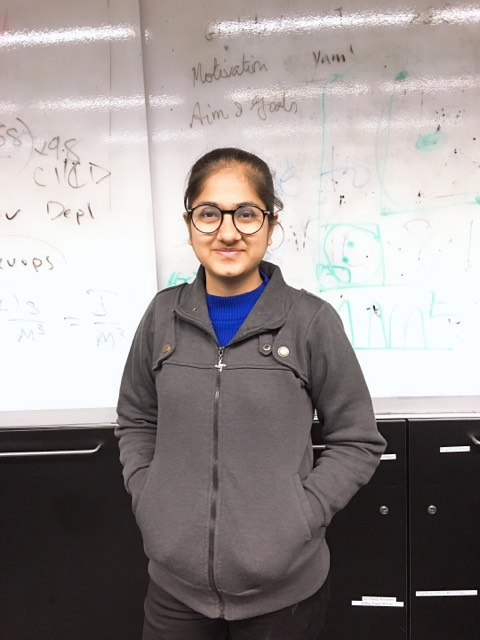
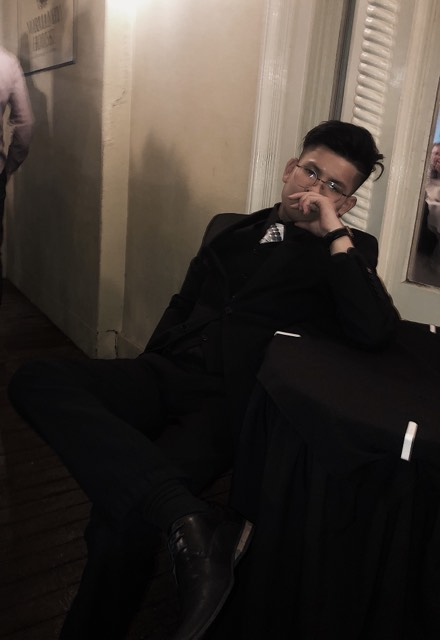

Daniel Surla - S3729065
Website: Daniel Surla I am a Filipino-born and New Zealand raised, who’s fond with computers and how they work to store and manipulate information and I can program a chat-bot and do a bit of web-development. I generally find myself to enjoy mountain biking and designing products. Ideal jobs: My ideal job is mainly low-level and high-level programming. Securing systems containing information. Working alongside the client and the users as well as other departments and teams. Consultants can also work as a project manager working alongside the Information Security department and with employees with similar skill sets such as programmers, and if our business employs a website we have a website manager and websites also need good security, so Information Security applies here.
Abhay Garg - S3770910
Website: Abhay Garg I am Abhay Garg, as I’m international student my roots are from India and to carry on my higher studies I moved to Melbourne, Australia. As I basically belong from commerce-focused society, where as learning about computers is completely separate pursuit in my study life. Studying IT is fun for me and I got interested in doing cyber security. I’m a beginner in this field but I’m getting a better understanding of this field as I go through. Ideal jobs: My ideal job is to be a website manager but I will start with the basics in designing a website. My ideal job is only related towards customer satisfaction and providing them with the necessary details. Responsible for development, implementation and maintenance of the infrastructure, hardware, and software utilized for the organization's website. Monitors web traffic, performance and capacity to identify, prevent and resolve issues. Coordinates with stakeholders to ensure that the site provides content and functionality that meet the business needs of the organization. Maintains appropriate security and troubleshoots any issues.
Anisha - S3700541
Website: Anisha I am Anisha, I was born and brought up in India and then moved to Melbourne, Australia for my studies. I am really fond of computing and latest technology, although I don’t much about them but still everytime I use them or anything, it makes me think to work on that and to know about them. I am really interested in programming even though, just a beginner in that. I don’t have any experience in IT as of now, because I have just started my studies in IT. Beside that, I love reading in my free time. Ideal jobs: My ideal job is of Developer Programmer, the job includes defining and developing detailed project plans, the front-end of user facing products, translating designs into functional prototypes. Working and cooperating with back end developers as well to produce and maintain code. Moreover, it includes having strong problem-solving skills and many other criteria. What makes me appealing in this job is that it is a programming job and it will help in my career growth.
Jason Nguyen - S3769688
Website: Jason Nguyen My real name is Thong Nguyen, I was born in Vietnam. I graduated from Vietnamese high school and I have 2 year experience in Vietnamese university. I am interested in computer and programming, I can program applications in C/C++, Python, Pascal and Java. Besides that, I also learn how to build and program Arduino and NAO robot on my own as hobbies. Ideal jobs: My ideal job is Project Manager but I want to start by being a Programmer first. I am quite keen on Application Programming and Web Programming (including Front-End and Back-End). Responsibility and patience are 2 words that I was born with. I am able to work alone or as a teammate as long as my teammates are also responsible. My future goal is having a position in Google or Apple company.
Oliver Hale - S3781403
Website: Oliver Hale I’m Oliver Hale, I was born and raised in Australia. Since I was young I’ve always enjoyed messing around with computers, I find the ideas behind it fascinating, as well as the evolution from basic DOS computers to the graphics that we have now. I enjoy rock-climbing and swimming in my spare time, as well as playing with my dog, Zeus. In terms of my interest in IT I would like to learn about security/encryption, machine learning, and networks. Currently, I have experience with some programming languages and basic encryption / encrypted messaging. Ideal jobs: My ideal job is as an IT Consultant or solution architect. Both of these jobs involve coming up with creative solutions to problems and interfacing with people, things that I enjoy. Consultants also have the capacity to work as project managers, organising groups of people to complete tasks. Having the ability to work with people, travel (potentially) and use the knowledge and skills I acquire within the IT industry to solve people’s problems make these jobs appeal to me greatly.
Duc - S3781251
Website: Duc I am Duc Nguyen and I come from Vietnam. Since I was young, I was interested in technologies, like computer system and others hardware. Later when I grew up I decide myself to study in an area that I can work on computers and developing hardware. So I decided to study I.T, which is not very new to me, I have the basic knowledge since I was in high school and I learned more about I.T from my brother. Ideal jobs: My idea job is Sales Support Officer, so it is delivering the product from the sale team to customer. However I want to work around hardware and computer system. So after i have the knowledge of which hardware is suitable for my clients and which system I should recommend for them. I’m really good at communicating to my customer, giving them the right option and make them happy about the product is what I really want to do for the future. In order to do that I must be apart of a team, working as a team is greater than working alone, because it is more organiser, more secure and we can push working rate a lot better.